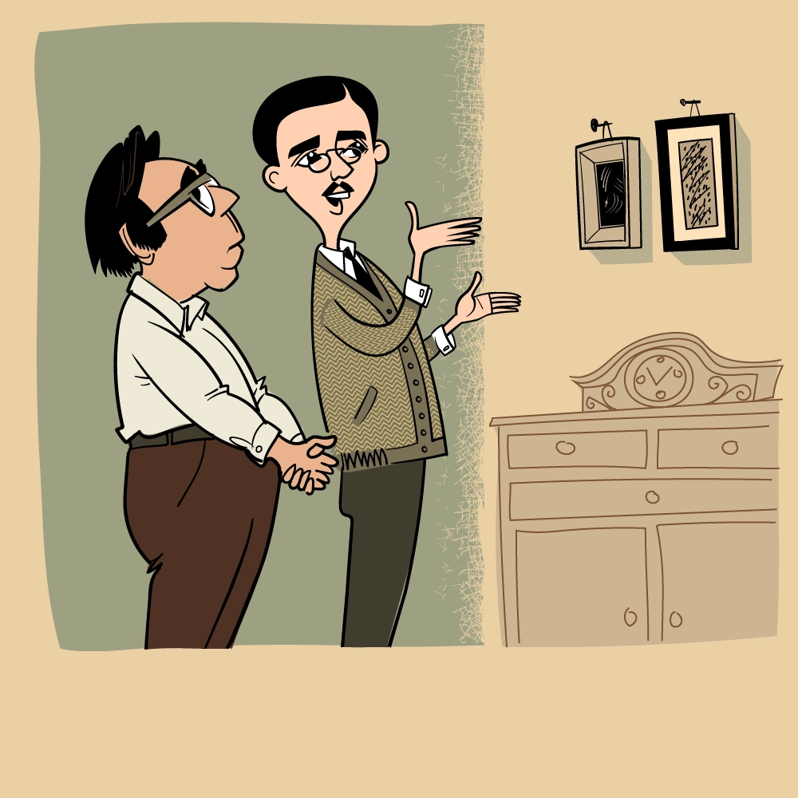
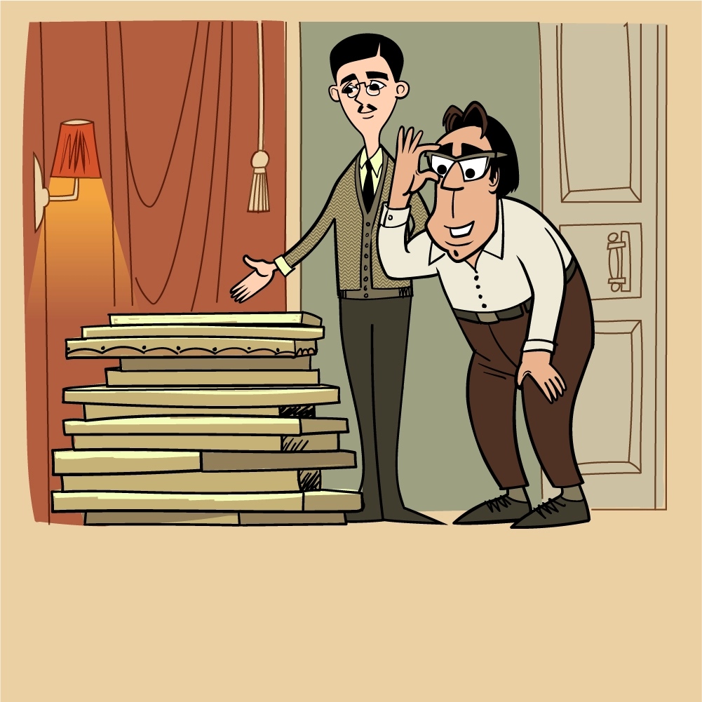
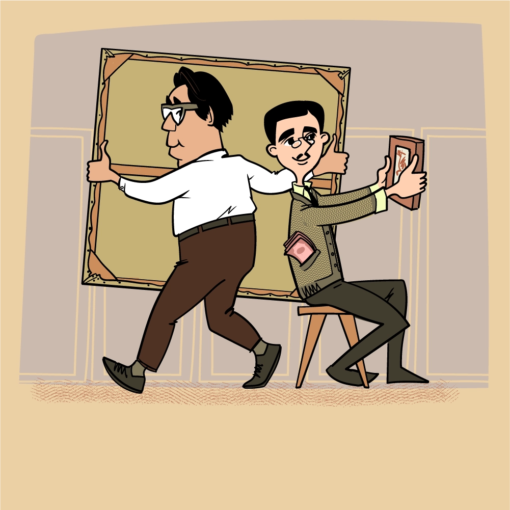
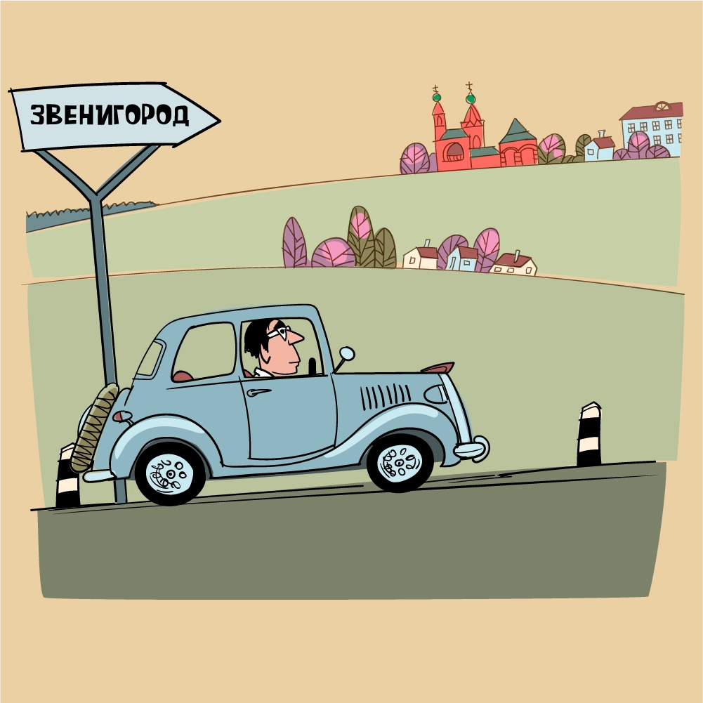
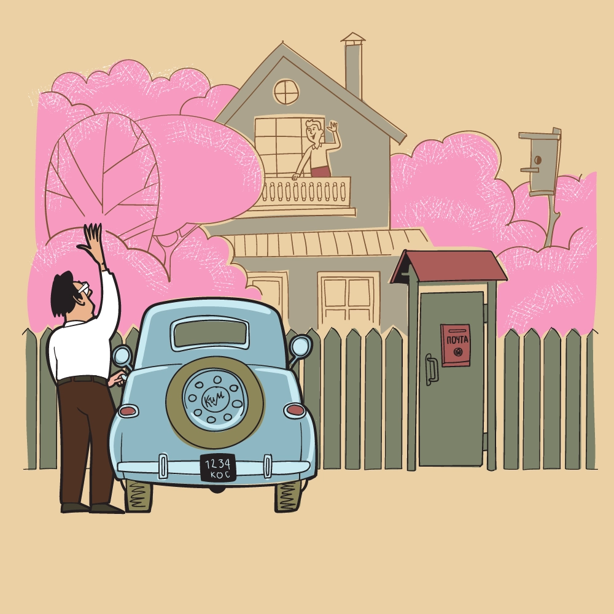
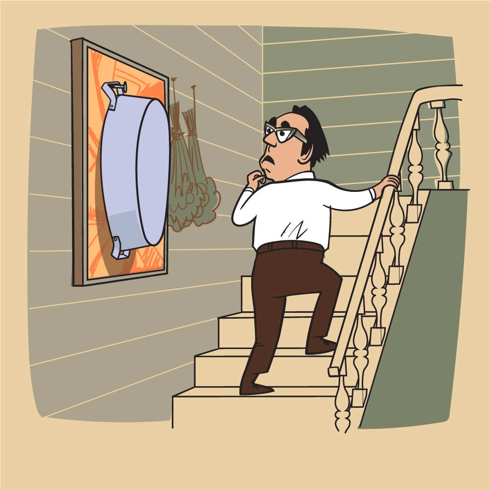
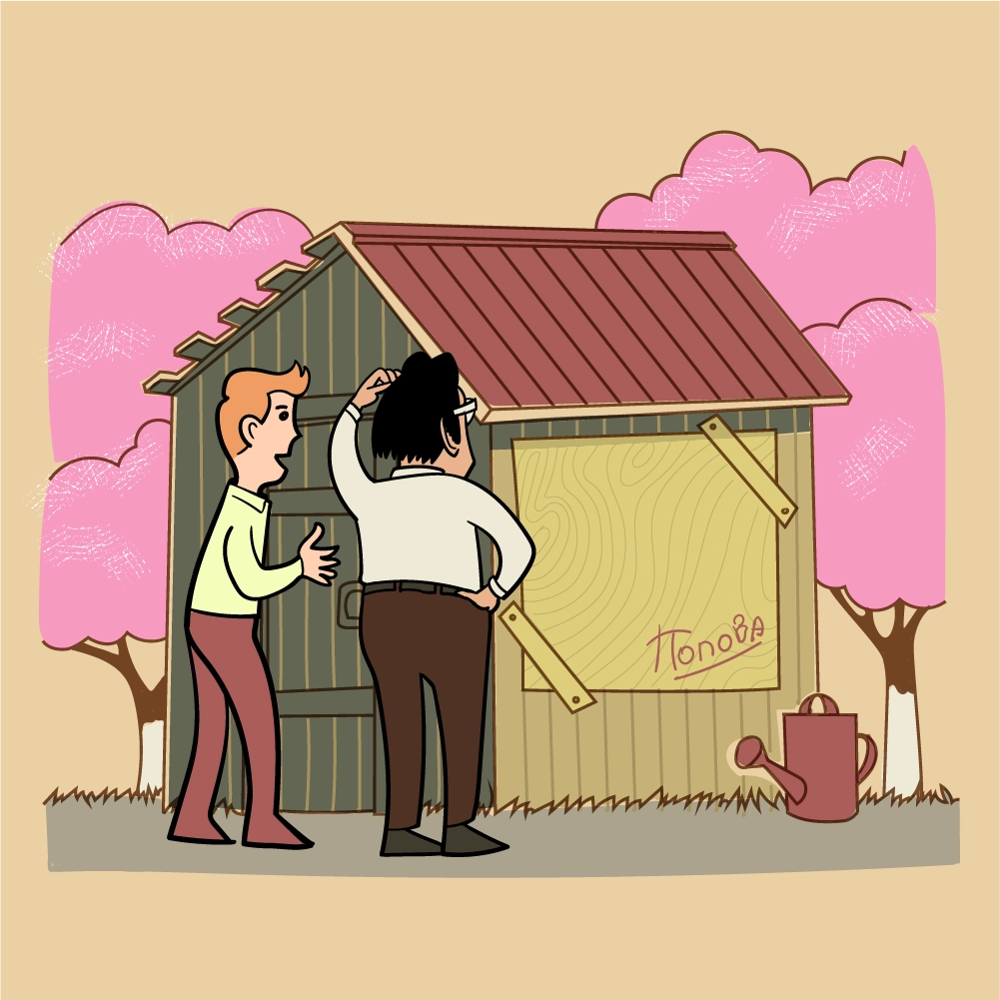
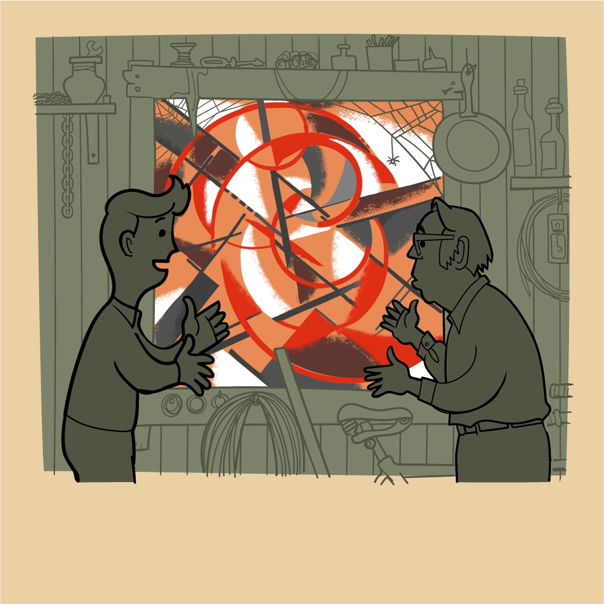
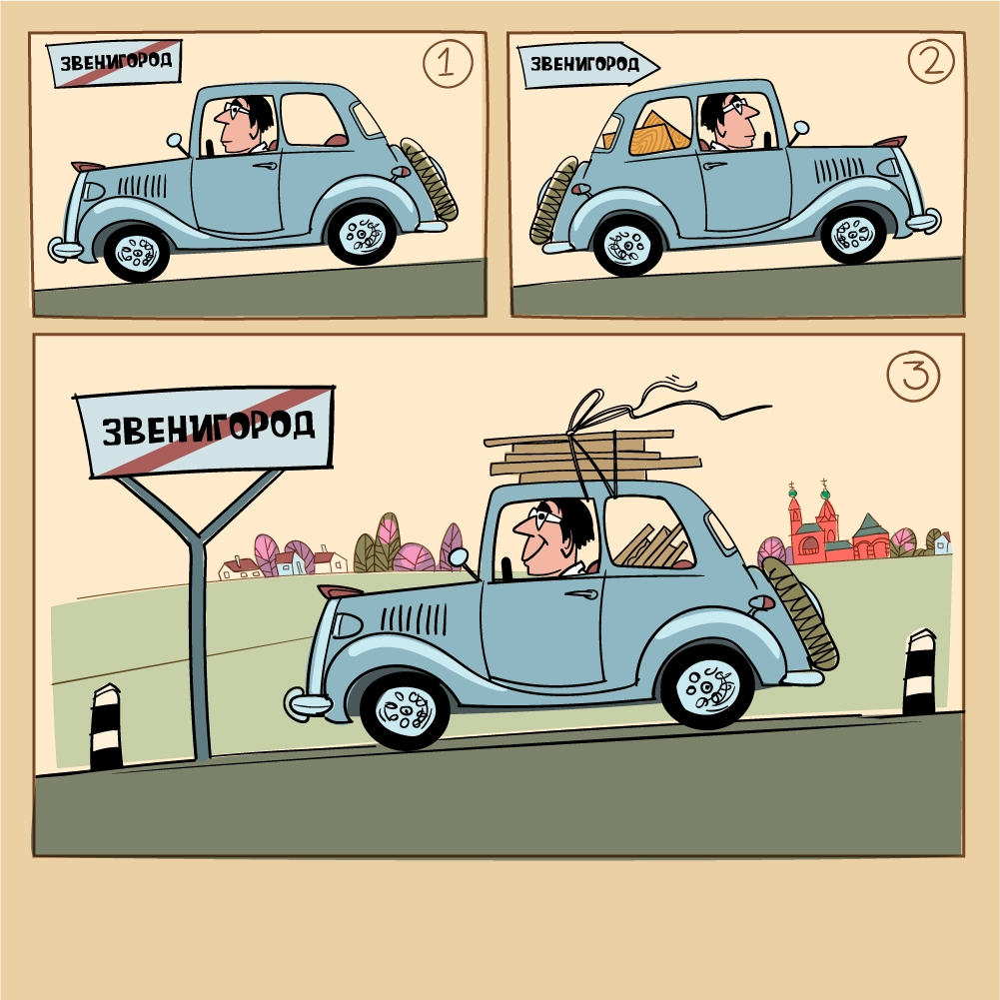
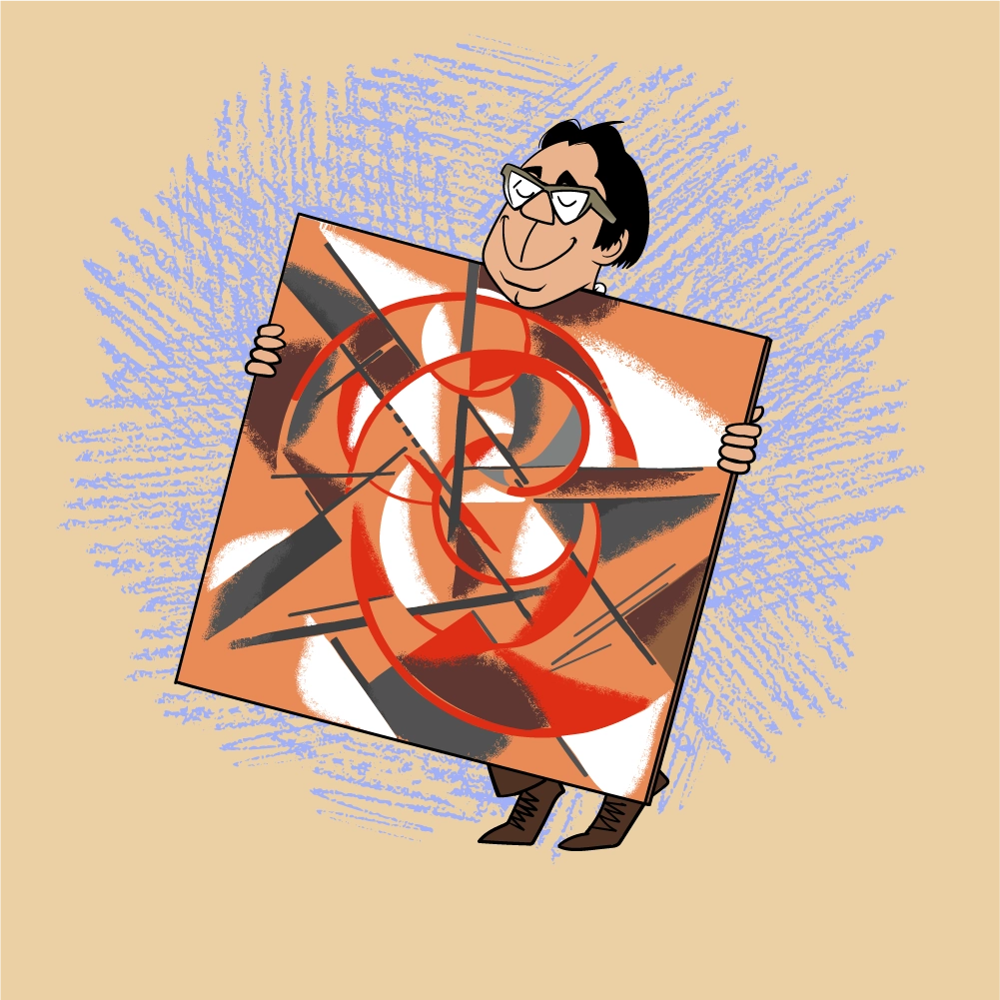

Al principio conseguí dos cuadros de Lyubov Popova, luego se rompió el hilo y sólo por casualidad volví al camino correcto.
Popova murió en 1924, después de lo cual conocí a su hermano Pavel Sergeievich Popov, un profesor universitario, un caballero alto y muy guapo. Vivía en la calle Arbat, en uno de los callejones, en un apartamento grande. En la habitación donde me recibió vi dos pequeños cuadros de Popova.
Le dije que había oído mucho sobre su hermana. Él respondió: “Sí, ya sabes, ella murió temprano, pero todavía conservo algunas de sus obras”. Le dije que estaba coleccionando sus obras y que quería comprárselas. Y él respondió: “¿Por qué no? Te las mostraré". Me llevó a otra habitación, donde había entre 10 y 15 lienzos apilados. ¡Todo de primera! Y los compré.
Pavel Sergeievich se separó de los pequeños lienzos con gran dificultad. Cuando le dije que quería comprar otro pequeño cuadro, no estuvo de acuerdo: “Este lo dejo, porque es pequeño, siempre lo puedes colgar, pero los grandes... ¿Qué hago con ellos?”
Pavel Sergeievich tenía un hijastro que vivía en Zvenigorod. Pavel Sergeievich una vez me propuso que lo visitara porque suponía que allí podrían haber quedado algunos cuadros de su hermana. Así que fui …
Casa de campo, amplio jardín. Era justo la época de la floración: manzanos rosados y blancos, cerezas. Me recibieron muy amablemente.
Y lo primero que vi cuando subí las escaleras hasta el segundo piso fue el cuadro de Popova: había una artesanía colgada sobre el...
Luego caminamos por el jardín. Y vi la ventana del granero, clavada con un contrachapado. En el contrachapado se podía leer la firma: “Popova”.
Entré al granero y vi que en la parte posterior del contrachapado había una hermosa obra de la artista. Inmediatamente pedí vendérmela, pero el dueño de la casa respondió: “No, no puedo, si llueve se mojará todo lo que hay en el granero. Primero tráeme un contrachapado y luego te daré el cuadro”.
Tuve que ir a Moscú a buscar un contrachapado. No encontré la pieza adecuada, así que compré dos más pequeñas y las traje a Zvenigorod.
¡Ayuda a Kostakis a incluir un cuadro de Lyubov Popova a su colección!
A cambio, el dueño me regaló el maravilloso cuadro. También me vendió el resto de las obras a muy bajo precio.
Así, adquirí la mayoría de las obras de Popova que tenía la familia de la artista.
